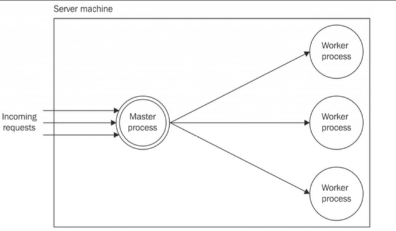

Scalability and Architectural Patterns in Node.js
Node.js is a non-blocking single thread architecture that works great for applications handling a moderate number of requests per second (usually a few hundred per second), especially if the application is mostly performing I/O-bound tasks ( reading and writing from the filesystem and the network) rather than CPU-bound ones (IoT and data processing, in which you better off using another framework like Spring Boot, in an ideal world, Node would be \(the\) choice for both I/O and CPU bound tasks, but i’m pretty sure we’ll get there :) )
So, for a large number of requests we gotta scale our aplication. There are 3 degrees of freedom that we can explore to enhance the application latency, fault tolerance and avaiability
The Three degrees of freedom of scalability
As pointed out by Martin L. Abbott and Michael T. Fisher in the book The Art of Scalability, we have three axis to explore an application scalability:

1.X-axis - Cloning :The most intuitive evolution of a monolithic, unscaled application is moving right along the X-axis, which is simple, most of the time inexpensive (in terms of development cost), and highly effective. The principle behind this technique is elementary, that is, cloning the same application \(n\) times and letting each instance handle \(1/n^{th}\) of the workload.
2.Y-axis - Decompose in Microservices: Scaling along the Y-axis means decomposing the application based on its functionalities, services, or use cases. In this instance, decomposing means creating different, standalone applications, each with its own codebase, possibly with its own dedicated database, and even with a separate UI.The criteria to split an application by its functionalities depend mostly on its business requirements, the use cases, the data, and many other factors.
3.Z-axis - Splitting by data partition: This axis should be considered only if X and Y are not useful solutions, due to it’s complexity. Here the application is split in such a way that each instance is responsible for only a portion of the whole data. This is a technique often used in databases, also known as horizontal/vertical partitioning. In this setup, there are multiple instances of the same application, each of them operating on a partition of the data, which is determined using different criteria. One famous approach for this is using Hashing Algoritms. This Axis is useful for complex, distributed architectures or for very particular use cases such as, for example, when building applications relying on custom solutions for data persistence, when using databases that don’t support partitioning, or when building applications at Google scale, for instance.
The two most common and effective techniques used to scale applications in Node are cloning and decomposing by functionality/service.
The Cluster Module
In Node.js, the simplest pattern to distribute the load of an application across different instances running on a single machine is by using the cluster module, which is part of the core libraries. The cluster module simplifies the forking of new instances of the same application and automatically distributes incoming connections across them. The number of instances depends on how many cores are avaiable in the machine. It’s important to remember that each worker is a different Node.js process with its own event loop, memory space and loaded modules.

The master process is responsible for spawning a number of processes (workers), each representing an instance of the application we want to scale. Each incoming connection is then distributed across the cloned workers, spreading the load across them. Since each work is indepedent (don’t share any memory), you can assign as many workers as the number of cores avaiable in the system. If you use OS X like me, you can find out by entering the command in the shell:
sysctl -n hw.ncpu
The cluster module uses the classic round-robin algorithm(the same as the operating systems lectures) to spread the load across the workers. Actually is an enhanced round robin , it is enriched with some extra behaviors that aim to avoid overloading a given worker process.
Building a simple HTTP Server
Let’s build a small HTTP server, cloned and load balanced using the cluster module. First of all, we need an application to scale, and for this example, we don’t need too much, just a very basic HTTP server.
Create a file called app.js:
import { createServer } from 'http'
const { pid } = process
const server = createServer((req, res) => {
// simulates CPU intensive work
let i = 1e7; while (i > 0) { i-- }
console.log(`Handling request from ${pid}`)
res.end(`Hello from ${pid}\n`)
})
server.listen(8080, () => console.log(`Started at ${pid}`))
The HTTP server we just built responds to any request by sending back a message containing its process identifier (PID); this is useful for identifying which instance of the application is handling the request. In this version of the application, we have only one process, so the PID that you see in the responses and the logs will always be the same. To simulate some actual CPU work, we perform an empty loop 10 million times.
You can now check if all works as expected doing a node app.js and sending a request to http://localhost:8080 using either a browser or curl.
You can measure the requests per second that the server is able to handle on one process. For this purpose, you can use a network benchmarking tool such as autocannon (nodejsdp.link/autocannon):
npx autocannon -c 200 -d 10 http://localhost:8080
The preceding command will load the server with 200 concurrent connections for 10 seconds. On my particular machine, i got something like this:

An important note: The load tests performed is intentionally simple and minimal and only learning purposes. Such results cannot provide a 100% accurate evaluation of the performance.
Now updating the server with cluster:
import { createServer } from 'http'
import { cpus } from 'os'
import cluster from 'cluster'
if (cluster.isMaster) { // (1) const availableCpus = cpus()
console.log(`Clustering to ${availableCpus.length} processes`)
availableCpus.forEach(() => cluster.fork())
}
else {
const { pid } = process
const server = createServer((req, res) => {
let i = 1e7;
while (i > 0) { i-- }
console.log(`Handling request from ${pid}`)
res.end(`Hello from ${pid}\n`)
})
server.listen(8080, () => console.log(`Started at ${pid}`))
}
From the code, it’s clear that its easy to use the cluster module. When we launch app.js from the command line, we are actually executing the master process. In this case, the cluster.isMaster variable is set to true and the only work we are required to do is forking the current process using cluster.fork().
When cluster.fork() is executed from the master process, the current module (app.js) is run again, but this time in worker mode. When the application runs as a worker, it can start doing some actual work. In this case, it starts a new HTTP server.
Making another test, I’ve got the following results:

For a next post I’ll talk about resiliency and availability with the cluster module, zero-downtime restart, dealing with stateful communications and scaling with a reverse proxy.